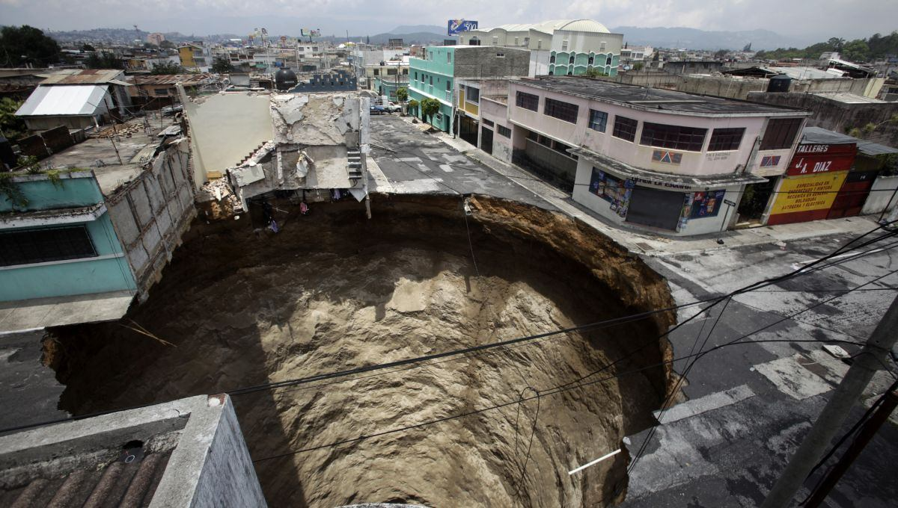

Cette semaine a été semées d'embuches, des parties de la ville ont disparues en un claquement de doigt !
Nous ne savons pas comment cela est arrivé, des témoins auraient aperçus des étranges formes dans le ciel au dessus des lieux disparus peu avant leur disparition.
C'est très inquiétant pour l'avenir de Saupiquet, qui n'arrive plus à être en paix...
Un proverbe chinois dit, "là où un trou apparaît, le malheur vient avec."
- Tchong
Où-ça ?
Les différents lieux ayant disparus sont dispersés aux quatre coins de la ville.
Ces lieux sont, la banque, la décharge et des bureaux au centre ville, nous ne savons pas si les personnes présentes en ces lieux vont bien, mais des funérailles sont à prévoir dans un avenir proche.
"Je n'ai pas retrouvé ma mère, elle a disparu depuis l'évènement, elle travaillait dans ses bureaux et je n'ai plus de nouvelles depuis...
J'ai peur pour elle..."
- Lillia TOUAREG
Nous espérons qu'aucun autre évènement du même type n'arrivera dans le futur, au vu des conséquences de celui-ci.
Comment est-ce arrivé ?
Des scientifiques disent que ceci serait lié à des secousses causées par les nappes phréatiques. Cependant, des théories du complot émergent au sein de la population de Saupiquet, celles-ci diraient que ce serait lié a un acte divin, ou extra-terrestre !
Image du trou à l'emplacement de la banqueTout cela est encore mystérieux, mais nous avons également des théories.
Nous pensons que cela a un lien avec les récents évènements des doubles.
J'ai peur pour l'avenir de Saupiquet.
Nous adressons nos plus sincères condoléances aux familles des disparus.